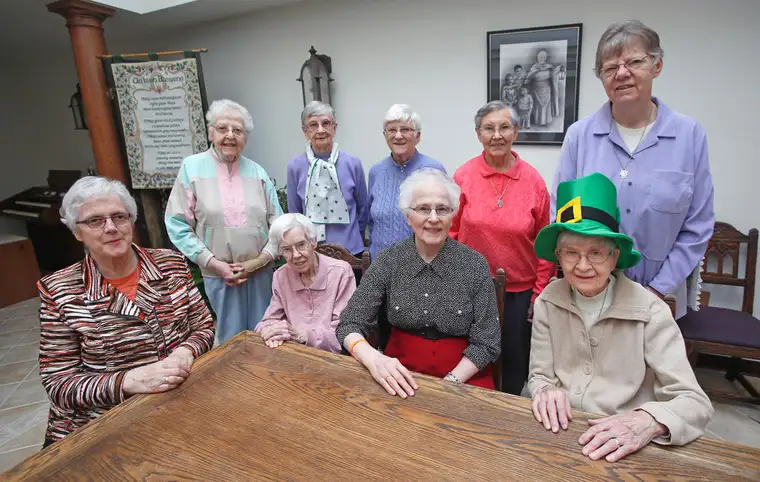
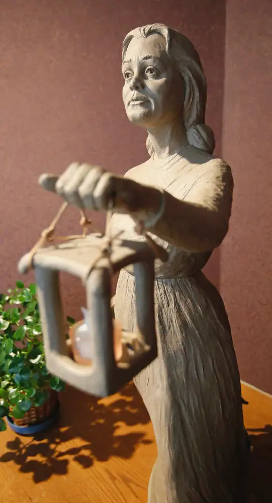
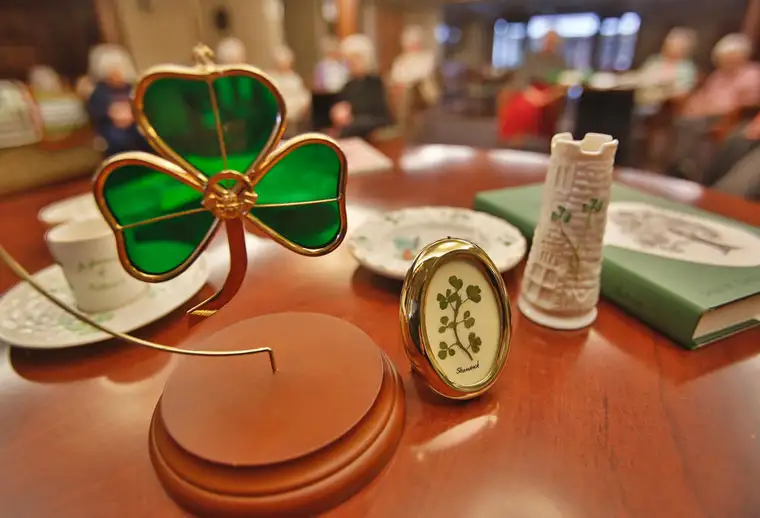

FARGO — Sister Agatha Lucey, 85, was only 17 in 1947, the year she and eight other teenagers made a journey of a lifetime from their native Ireland to a faraway land called Fargo.
They flew into Iceland, then, after refueling, went on to Canada, and finally touched down in North Dakota.
Arriving in November in the middle of a snowstorm, they took it all in with youthful zeal.
“We were not used to the snow,” Sister Agatha says. “We were out playing and throwing snowballs. Everything was new and so much fun.”
Fittingly, the young women got here the week of the Feast of the Presentation of the Blessed Virgin Mary — an annual celebration associated with their new religious order’s foundress, Nano Nagle of Ireland.
“The day after we came, we got our postulate cap,” Sister Agatha explains. “We came for the purpose of staying, of becoming (religious) sisters.”
Sister Agatha admits not everyone back home was excited. Her father had died the year prior, and her aunt questioned the move. But her mother, whom she describes as “very brave,” had said, “If the Lord calls them, I’m not going to stand in the way.”
Sister Josephine Brennan explains that in the early 1900s, Bishop James O’Reilly returned to his native Ireland to recruit religious vocations for Dakota Territory. Several recruits were her aunts, which led to her coming here later.
But first, she had to help her mother care for her infant brother. When he was a year old, she left for Fargo by boat, waving goodbye to this precious little one.
Though Sister Agatha returned to Ireland years later, her mother never visited here due to fear of water from a neighbor’s lake-drowning death.
Despite leaving her mother and eight siblings, Sister Agatha says, she wasn’t sad. It was commonplace then for the Irish to emigrate, and “everyone seemed to have relatives in the United States.”
Her comrade Sister Pauline Eagan, whose mother died a month after her departure, agrees. “I think there was so much going on, there wasn’t a chance to be lonely,” she says. “St. James kept you on the go!”
Their enthusiasm fits the missionary spirit of Nano Nagle, who, in 2013, was named “venerable” by Pope Francis, a step toward becoming a canonized saint.

Nagle never left Ireland, but after a youth filled with selfish pursuits, she was drawn to something more meaningful through the teachings of Jesus, and began reaching out to the poor, even going underground to educate children — an illegal pursuit at the time.
She once said, “If I could be of any service in saving souls in any part of the globe, I would willingly do all in my power.”
This same desire runs through the blood of the eight Irish Presentation of the Blessed Virgin Mary sisters now living at Sacred Heart Convent in south Fargo, along with two now at Villa Maria, and in the 22 others here who either have Irish heritage or claim it through Nagle’s spirit.
Often, it’s reached outside the convent, too.
When he was around 4, Michael Olsen and his family invited some of the sisters for dinner at the request of his father, then Catholic Action News editor for the Fargo Diocese, who “thought it would be a good idea to get some of these nuns and priests out of their houses.”
His mother whipped up a roast beef spread, complete with fresh corn-on-the-cob. Olsen and his siblings went at the corn voraciously, but the sisters hesitated.
“They looked at each other and the corn and us and saw how we were eating it,” he notes. Reluctantly, they finally followed suit. His father later explained that in Ireland, corn was only for pigs.
While he was a student at Shanley High School some years later, Olsen took chemistry with Sister Rosaria Acton, recently deceased. “No one messed around in her class,” he says.
Wanting to see her laugh, he tried often, without success. Finally, toward the end of the year, he volunteered to help clean the chemistry lab, and while carrying a load of test tubes, tripped. The glass tubes went flying, crashing to the floor, and shattered.
“I looked up at Sister Rosaria, and at first I see a smile, then a broader one, then she laughed and laughed,” Olsen says. “It wasn’t my plan, but I’d finally made her laugh.”
Later, she became a confidant to Olsen. “She was a really good listener. I don’t remember any specific words of wisdom, but she was just always there, and I had a safe feeling around her.”
Cathy Schwinden, social justice coordinator at Church of the Nativity, says she still remembers how she learned President John F. Kennedy had died — through the gentle, Irish brogue of her teacher, Sister Olivia Scully.
Sister Olivia explained separately that her name derives from the Irish saint Oliver Plunkett. “He died for the faith. He was killed in England at a time there were a lot of strong feelings against the Catholic Church in England.”
Schwinden’s association with the sisters started in the fall of 1956, in first grade, and continued through the end of high school. She says she’s grateful for 16 years of being “inspired by vowed women” who were “all sorts of different personalities and styles.”
She still remembers the private art and piano lessons at the former convent building in north Fargo. “I’d climb this big staircase with this beautiful woodwork. It was mysterious,” she says. “I’m still a great lover of art, and still play piano.”
Though the sisters were “very orderly,” Schwinden says, “there was no one wrapping anyone with a ruler. They were nothing but kind, and really inspirational.”
“They started an orphanage when they first came, within days, and started a school,” she continues, noting the education was tuition-free in those earlier days because the sisters donated their labor.
“There was such a commitment to share the faith and respond to the needs of the people. It was truly amazing,” Schwinden says. “I look back and credit them with so much of what I value today, and for their example.”
[For the sake of having a repository for my newspaper columns and articles, I reprint them here, with permission, a week after their run date. The preceding ran in The Forum newspaper on March 12, 2016.]
